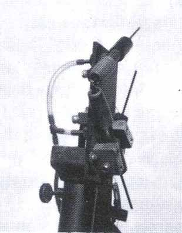
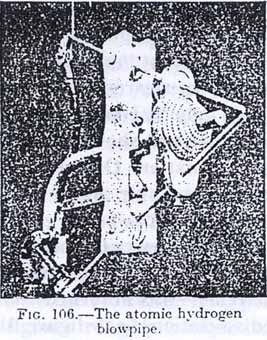

|
THE ATOMIC HYDROGEN REACTION Foreword by Tom Bearden: Here is an interesting excerpt from Lyne's book which, although not from a standard scientific journal, appears to have some vital information in it, particularly with regard to early hydrogen welding processes and other processes such as the Papp engine. We stress that statements in the article where Lyne simply rejects general relativity etc., and using his own terminology, should not be taken too literally since it is his opinion. Further, that is not the important part of his information advanced. In modern quantum field theory, the charge (such as a proton which is atomic hydrogen without its electron) is considered an infinite bare charged mass in the middle surrounded by infinite virtual charged masses of opposite sign. The difference between the two infinities is finite, so the external observer looking through the "shielding screen" of the outer charge sees its difference with the sign of the inner charge, and thus sees a finite value for the inner charged mass, even though infinite charges are involved. In short, he "sees" or observes the standard textbook value for the charge and its mass. But by the asymmetry of opposite charges, two infinite charges of opposite sign can in fact pour out EM energy indefinitely (unceasingly). The original charges of the early universe have been doing so for some 14.7 billion years, assuming the best observational determinations of the age of the universe. With the discovery of broken symmetry in 1957, one of the proven broken symmetries is that of opposite charges. The classical "isolated charge" (such as the proton/atomic hydrogen), is actually a charge ensemble of opposite charges. Hence a priori the "isolated charge" (classical view) must demonstrate the asymmetry of opposite charges in the quantum field theoretic view. This means that the charge really does continuously absorb virtual photon energy from the vacuum, coherently integrate it into observable photons, and re-emit that EM energy as real, observable photons radiating in all directions at light speed. This radiated real EM energy establishes and continuously replenishes the associated fields and potentials of the source charge, radially outward at light speed. So atomic hydrogen (the proton) does indeed continuously extract virtual energy from the active vacuum, integrate it into real observable energy, and radiate that real EM energy outward. This focuses strong attention on the gross inaccuracy of the present view of the "static EM field" (as from a charge or a dipole such as a permanent magnet) in both physics and electrical engineering. The EM field in space is comprised of real observable photons, else we must discard quantum mechanics, quantum field theory, quantum electrodynamics, and much of physics. Further, a photon in space is moving at light speed a priori. So (in spite of the odd view of some physicists and most engineers), the "static" EM field must be more correctly regarded as in Van Flandern's analogy of a sort of "perfect waterfall", whose total form appears static, but with that "static envelope" made of internal parts in continuous motion, with each part moving out of any position noted and being replaced by the part behind it. The EM field in space is that sort of structure, where its "internal parts" are photons and the photons are moving at light speed. The point is that any charge produces a continuous flow of real, usable EM energy from the vacuum. Thermodynamically we are describing a nonequilibrium steady-state (NESS) system, and such a system is permitted to continuously emit energy (received from its environment). The charge also falsifies the present second law of thermodynamics to any size level and time duration desired, because the emitted photons do form deterministic EM fields and potentials as a function of radial distance. One calculates the field intensity and potential intensity at any radial point, by a deterministic formula -- not by the use of statistics. Stated in the language of thermodynamics, the charge consumes positive entropy (disordered and uncontrolled energy) in the virtual state, and coherently integrates it to ordered and controlled energy in the observable state, which is a negative entropy operation producing useful EM energy in the observable state. Here is the secret of the "coherent integration" process of the source charge. By absorbing a virtual photon, the energy of that virtual photon (divided by c-squared) provides a virtual change to the mass m of the charge. But that mass is integral and unitary! The entire mass is what is changed, not just some part of it. Then another virtual photon is absorbed, with a second virtual change of the mass, COHERENTLY added to that first virtual change because the mass change is unitary. Hence the iterative virtual changes of the mass of the charge add coherently until sufficient mass accumulates (when multiplied by c-squared) to constitute the energy of an observable photon. At that point the virtual excitation of the mass decays by emitting a real, observable photon. The process iteratively proceeds with a rapidity that is mindboggling. The end result is to put some real substance into Lyne's observations on the excess energy from atomic hydrogen, which is equivalent to the excess energy from the proton. The proton (and any other charge, viewed in the quantum field theory manner) is continuously and ceaselessly pouring out real EM energy extracted and coherently integrated (RE-ORDERED and RECOVERED) from the disordered virtual energy of the seething vacuum. So the only barrier to COP>1.0 EM performance with atomic hydrogen is in the process or method used to diverge and collect sufficient of the continuously flowing "gusher" of real EM energy from each atom (each proton). Or, viewed thermodynamically, COP>1.0 performance is permitted by the NESS process, as is already well known in the thermodynamics of nonequilibrium steady state systems. It's rather like a windmill in a steady wind. It can permissibly change the form of its input energy to a different form of output energy, and part of that output energy can be intercepted, collected, and dissipated to power external loads. The common solar cell does the same thing, receiving observable photons from its environment and outputting electrical energy. So the reader is urged to simply consider the fundamental information in Lyne's cogent writing, in light of the foregoing discussion, and sort out the science as he sees fit. The real point of the article is the excess energy output, and its availability for use to perform real work. Tom Bearden 7/6/03. Quote from William Lyne's book “Occult Ether Physics” The atomic hydrogen reaction first came to my attention in 1964, when I was studying industrial processes at Sam Houston State University, in Huntsville, Texas, the year after taking an introductory course in college physics. While reviewing various welding processes in a textbook, my eyes fixed on an older process called "atomic hydrogen welding". By that time, the process was already considered "obsolete". To me, the process seemed valuable, not only because it produces such high temperatures—above 3400° F.—enough to melt tungsten—the highest temperatures producible by man—but is also "self-shielding", and can be used to weld diverse metals, often without flux, with a concentrated flame producing little heat distortion, when welding thin metal. In the process, 'normal' diatomic H2 is shot through an electric arc which dissociates it into "atomic" hydrogen, H1. This atomic hydrogen recombines at the (welded) metal surface, producing the very high heat. Though the process interested me then, and always has, I have never seen an atomic hydrogen welding unit for sale, for the 31 years hence. Industry's obvious excuse for laying the valuable process aside was that it had been 'replaced' by 'better' processes, such as Heliarc, TIG, and MIG welding, though they rarely mention "plasma arc welding", which has also almost disappeared from the market. Since plasma arc welding is merely an extension of the atomic hydrogen process, using a specially redesigned torch, the 'mysterious' reasons are undoubtedly the same. The process simmered in the inner recesses of my mind for a few years until 1976, when I rekindled my interest in the process for possible use in welding stainless steel and reducing and fusing platinum metal compounds, because hydrogen reduces such compounds (which must also be shielded from oxygen) to metals. The atomic hydrogen process does not rely upon the combustion of hydrogen with oxygen in the air, but upon the "atomic" energy released when atomic hydrogen recombines to form the 'normal', diatomic hydrogen. I still had some unanswered questions, since the various welding data at my disposal failed to mention sufficient specific details. If Nikola Tesla was right, then I am right, that the energy comes from the ether . Because I knew of no source from which to purchase an atomic hydrogen torch, I decided to build one, but my information was inadequate for proper construction. In the torch I made, the hydrogen gas entered the arc concentrically, around both electrodes, instead of passing through the arc at a right angle. I also used the wrong kind of arc transformer, so it didn't work as well as it should have. Despite the disappointment, I knew the torch would work better if I corrected the problems, so I kept the torch in my barn until better information and sufficient time was available. I excited the curiosity of the industrial spooks, when I rented a large tank of hydrogen at a local welder's supply, and this probably contributed to the sudden acceleration of the CIA-maintained judicial harassment I endured between 1974 and 1992 (18 years). They apparently assumed I was exploring the process for its energy potential, rather than for just welding, and they were correct. My torch is shown below: |

|
In the '70s, I had acquired an old English inorganic chemistry textbook l, purchased from Los Alamos Scientific Laboratory salvage for $.25, which contained a halftone photo of a '30s-vintage atomic hydrogen welding torch, along with some basic data. The torch shown was different from the one I constructed, in that it used a high voltage arc transformer, and had no mechanism to strike the arc electrodes together to start the arc, because the high voltage made it unnecessary. It also showed the gas passing at right angle through the arc. In this old textbook, it was stated at page 170 (emphasis mine), as follows: "Langmuir (1912) discovered that hydrogen at low pressure in contact with a tungsten wire heated by an electric current is dissociated to some extent into atoms:"...."This absorbs a large amount of energy, about 100 kcal. Per gram-molecule. " "... The atomic hydrogen formed is chemically very active. Atomic hydorgen is formed when an electric arc between tungsten electrodes is allowed to burn in hydrogen at atmospheric pressures (Fig. 106) ". The text continued: "Atomic-hydrogen blown out of the arc by a jet of molecular hydrogen across the arc, forms an intensely hot flame, capable of melting tungsten (m. Pt. 3400 o). This flame obtains its heat from recombination of hydrogen atoms to H2." "Hydrogen being set free in a chemical reaction is often more reactive than hydrogen gas." "...the activity of such nascent (newborn) hydrogen, in the act of liberation from its compounds, is due to the hydrogen being in the atomic state." The following is a copy of "fig.106" : |

|
In checking this data in a more recent Van Nostrand's Encyclopedia of Science z., at page 1311 it was stated in pertinent part: "Hydrogen molecule dissociate to atoms endothermically at high temperatures (heat of dissociation about 103 cal/gram mole) in an electric arc, or by irradiation." "...the hydrogen atoms recombine at the metal surface to provide heat required for welding." I was surprised to find this in the Van Nostrand encyclopedia, but I also found that in 1910, the D. Van Nostrand Company published a book by HaIler and Cunningham, entitled The High Frequency Coil, (The construction of a Tesla Coil for the advanced amateur. 119 pages), so there is a record of sorts, of Van Nostrand's association with Tesla. SMOKESCREENS FROM ACADEMIA It seemed odd to me that it was later suggested that the 103 calories of dissociation energy absorbed from a very brief exposure to the arc is the same heat as that "...required for welding" as described, and I believed it to be more reasonable that the excess heat had to come from "elsewhere". The dissociation energy would be analogical to a slice of bread (@4 cal. gram), and the gross output would be equivalent to 60 loaves of bread (@1814 cal. lb.), calorie-wise. There was too much disparity between the two, with plenty of suspicious omissions and confusions, in an obvious attempt to cover up the truth in between. The older text showed the clearer construction of a device, and the newer text showed that only 103 cal./gram mole were required for dissociation, while the older text showed that 100,000 cal./gram mole were liberated on recombination. Only by jumping back and forth between the two sources was I able to put a complete documentation together, and discover the conflicts. It was apparent from the newer text, that the writers intended for us to believe that the final l00 k.cal./gram molecule heat—later upped to 109 k.cal/gram molecule—was absorbed from the arc, but the 103 cal./gram molecule dissociation heat figure showed a net 108,897 cal./gram molecule unexplained. If there are about 65 cubic centimeters per mole of hydrogen at its critical volume, it seemed highly unlikely that sufficient energy to weld could be absorbed from the 'dissociating arc', during the time required for 65 cubic centimeters of gas to pass from the orifice and through the arc. 109,000 cal./gram mole equals 432.6 BTU/gram mole—roughly the heat energy contained in 60 loaves of bread—the "extra heat energy" which they have asked us to believe is 'stored' in an amount of atomic hydrogen which weighs 1/28th of an ounce, during its brief passage through the arc! How could the transformer produce that much energy, especially when it uses only half what it does in conventional welding processes? It seems more likely that excess heat could be stored in molecules than in 'almost naked' atomic hydrogen atoms. What ever happened to Bohr's little atom! It got bigger, and bigger, and........ Between the older text (1921-1950, from the first and sixth editions) and the newer (1976) Norton science encyclopedia, it was obvious that science was much more straightforward in the pre-National Security Act days, and that . . . . . .
EXCERPTED FROM "OCCULT ETHER PHYSICS: William Lyne
$10.00 + $2.00 shipping/handling. |